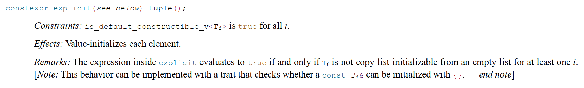

August 23, 2020
Standard library made easy with C++20
When he created Go as a knee-jerk Reaction to C++11, Rob Pike proclaimed Less is exponentially more. While it is anyone’s guess what that is supposed to mean, in this blog post we will see how C++20 is less verbose, yet more expressive than prior C++ versions.
I am a big fan of concepts-driven designs.
The use of concepts leads to less coupled, more generic interfaces that work with more types.
Take std::tuple for example. A tuple can be constructed from a std::pair. But it can’t be
constructed from a QPair or a boost::tuple. Nor can it be constructed from a std::array,
even if std::array follows the tuple protocol.
Isn’t that a bit arbitrary?
Shouldn’t instead construction and comparison support all objects following the tuple protocol?
Especially for comparison, if a different part of my system use a different tuple type (of the same arity),
why should I need to do an expensive conversion to compare their value ?
A better question of course would be why is std::pair a distinct type from std::tuple?, the answer to that
being legacy, as always. Could we fix it? Probably not.
But anyway, this led me to propose P2165 - Comparing pair and tuples. This, in turn led me to look at libstdc++'s tuple implementation. This is the topic of today’s blog post.
You can also checkout this article which explain how std::tuple is implemented in C++17.
Down with EBO
std::tuple can be implemented as a recursive tuple.
template <typename T, int index>
struct Wrapper> {
T type;
};
template <int index, typename T, typename... Tail>
struct Tuple
: Wrapper<T, index>
, Tuple<index + 1, Tail...>
{
};
Unfortunately, we do need to explicitly define constructors to be able to use that type, which ends up with 14 or so constructors and a few assignment operators. Half of those being for allocator support.
On top of that, libstdc++ optimises for empty types:
struct empty{};
static_assert(sizeof(std::tuple<empty, empty>) == 1);
To that end, it implements empty base class optimization
template <typename T, int index, bool /* is the class empty */>
struct Wrapper;
template <typename T, int index>
struct Wrapper<T, index, std::is_empty_v<T>> {
// LOTS OF CONSTRUCTORS
};
template <typename T, int index>
struct Wrapper<T, index, !std::is_empty_v<T>> {
// LOTS OF CONSTRUCTORS
T type;
};
template <int index, typename T, typename... Tail>
struct Tuple
: Wrapper<T, index>
, TupleImpl<index + 1, Tail...>
{
// LOTS OF CONSTRUCTORS
};
The actual libstdc++ implementation is a bit more complicated still. Overall, about 70 lines of code, mostly duplicated, are there to support Empty objects. This small optimization is therefore anything but free in terms of maintenance. It also have some compilation cost, as more templates need to be instantiated. Is it even worth it?
In C++20 all of that complexity goes away,
template <typename T, int index>
struct Wrapper> {
[[no_unique_address]] T type;
};
template <int index, typename T, typename... Tail>
struct TupleImpl
: Wrapper<T, index>
, TupleImpl<index + 1, Tail...>
{
};
[[no_unique_address]] gives us the same optimization as Empty-Base-Class-Optimization,
without adding aby complexity to our design.
Less code, more expressiveness, less maintenance.
###C++20 is more implicit about being explicit.
Like watermelons are mostly water, std::tuple is mostly constructors.
I counted 24 constructors in libstdc++ implementation.
Let’s remove some.
The standard specifies that a tuple constructor is explicit if any of its elements would be constructed explicit.
struct S {};
struct E { explicit E(S); };
struct I { I(S); };
std::tuple<E> x = S{}; // ill-formed
std::tuple<I> x = S{}; // OK
Pretty neat. But how does it work ?
Simply by having defining 2 constructors, one explicit and one not, and SFINAE away the one that should not be considered:
template<bool _Cond, typename... _Args>
using _ImplicitCtor =
__enable_if_t<_TCC<_Cond>::template __is_implicitly_constructible<_Args...>(), bool>;
template<bool _Cond, typename... _Args>
using _ExplicitCtor =
__enable_if_t<_TCC<_Cond>::template __is_explicitly_constructible<_Args...>(), bool>;
template<bool _NotEmpty = (sizeof...(_Elements) >= 1),
_ImplicitCtor<_NotEmpty, const _Elements&...> = true>
constexpr tuple(const _Elements&... __elements);
template<bool _NotEmpty = (sizeof...(_Elements) >= 1),
_ExplicitCtor<_NotEmpty, const _Elements&...> = false>
explicit // This is the explicit constuctor
constexpr
tuple(const _Elements&... __elements);
And this for every single constructor!
Don’t worry, this is not the way, for in C++20 explicit was amended to support another form explicit(boolean-expession).
As such explicit(true) is equivalent to explicit while explicit(false) is not explicit.
We can then rewrite the above code as:
template<bool _NotEmpty = (sizeof...(_Elements) >= 1)>
explicit(is_explicit_v<const _Elements&...>)
constexpr
tuple(const _Elements&... __elements);
This little trick let us remove about 10 constructors and about 150 lines of codes. Don’t reinvent yourself!
Constrained copy-pasta
With so many constructors, std::tuple is a template SFINAE bonanza.
So it is not surprising that the best way to improve std::tuple is to go all in on C++ concepts.
Or rather, on requires clauses.
This is the code as in libstdc++ for the default constructor:
template<typename _Dummy = void, _ImplicitDefaultCtor<is_void<_Dummy>::value> = true>
constexpr
tuple()
noexcept(__and_<is_nothrow_default_constructible<_Elements>...>::value);
It can be rewritten using a requires clause easily: No std::enable_if wizardry.
explicit(!(__and_<__is_implicitly_default_constructible<_Elements>::value...>::value))
constexpr tuple()
noexcept((__and_<is_nothrow_default_constructible<_Elements>::value...>::value))
requires((__and_<std::is_default_constructible<_Elements>::value>...>::value));
In fact, if we look at the standard, the code above is a direct translation of the wording!
Each Constraint in the wording draft can be converted to a C++ constraint!

One other thing we should do, is to use fold expressions and template variables to cut down on the clutter. Both these features are actually C++17 features!
explicit(!(__is_implicitly_default_constructible_v<_Elements> &&...))
constexpr tuple()
noexcept((std::is_nothrow_default_constructible_v<_Elements> &&...))
requires((std::is_default_constructible<_Elements> &&...));
Because requires clause make it a lot easier to express constraint, and allow to
basically implement the standard line by line, we can remove a lot of code while increasing
readability!
A pair by any other name would compile as fast
Because a tuple is constructible from a pair, libstdc++ elects to specialize tuple for 2 elements, for the sake of these additional constructors. But was is a pair, if not a tuple? Following the logic, we could remove that entire specialization, a whooping 360 lines of code. So satisfying!
We could also keep the constructors for pair by simply adding a requires (sizeof...(_Elements) == 2)
to these constructors, no need for specialization!
🛸 Nothing as futuristic as a spaceship!
Tuple provides all the comparison operators which are implemented in about 100 lines of code.
We can replace that by 2 functions, operator== and operator<=>:
template <typename...Elem, typename...OElem, template <typename...> typename B>
requires (tuple_like<B<OElem...>> && sizeof...(Elem) == sizeof...(OElem))
bool operator==(const tuple<Elem...> & a, const B<OElem...> & b) {
return [&]<std::size_t... I>(index_sequence<I...>)
{
return ((std::get<I>(a) == std::get<I>(b)) && ...);
}
(std::make_index_sequence<sizeof...(Elem)>{});
}
template <typename...Elem, typename...OElem, template <typename...> typename B>
requires (tuple_like<B<OElem...>> && sizeof...(Elem) == sizeof...(OElem))
auto operator<=>(const tuple<Elem...> & a, const B<OElem...> & b) {
using ret = common_comparison_category_t<__detail::__synth3way_t<Elem, OElem>...>;
return [&]<std::size_t... I>(index_sequence<I...>)
{
ret c = ret::equivalent;
// http://eel.is/c++draft/expos.only.func#2
return ((c = synth3way(std::get<I>(a), std::get<I>(b)), c != 0) || ...), c;
}
(std::make_index_sequence<sizeof...(Elem)>{});
}
Both these functions will support comparing a tuple to any tuple-like object.
They could be hidden friends, which would improve compile times, if not for the dependency
on std::get.
To implement them, I have used a few C++20 features.
Notably, generic lambdas, which are of the form: []<_template-parameters_>(){}.
These allow us to unpack the tuple to make use of fold expressions directly in the functions.
Notice also the requires clause.
in the definition of operator<=> a nasty comma expression is used to return when 2
elements compare equals.
I understand this style might appear novel, maybe even scary, but properly documented
it is easier to document that something that relies a lot on enable_if and other meta-programming heavy
approaches.
Interestingly these functions are not constrained by the standard.
We can’t have nice things
Using these tricks, I shaved over 700 lines from <tuple> almost a third.
And I am sure tons of improvements could still be made.
I probably introduced a few bugs doing this experiment, but I feel like I made the code
easier to read and to maintain. It might even compile faster!
But here is the thing.
Both libstd++ and libc++ are designed to work in many languages modes.
As such <tuple> is designed to compile with a C++11 compiler.
So none of the features presented here are likely to be used by actual standard library maintainers. And when they are, they ae conditionally supported leading to even more code!
The backward compatibility constraints standard library maintainers put on themselves have many costs: code that is harder to maintain, slower to compile and hard to evolve. This in turn might impede new features as we often hear in the committee that some classes are too complexes to modify.
Does it need to be that way?
Should there be a standard library implementation that track the standard and doesn’t support
multiple C++ version in the same branch?
Can we imagine an implementation where _Ugly names would not be used, instead relying on
non exported symbols name in modules?
This might be a pipe dream, a fresh standard library would be a herculean effort nobody is likely to
entertain.
In some way, C++ is becoming a more accessible, more expressive language. And as we keep making complex library types easier to implement, standard libraries might appear increasingly complex and obscure.
But at least they support C++03.
Share on